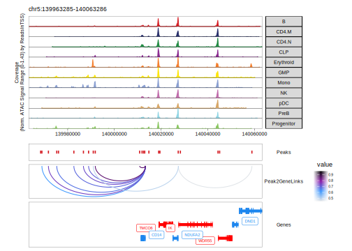

17.3 Peak2GeneLinkage with ArchR
Similar to co-accessibility, ArchR can also identify so-called “peak-to-gene links”. The primary differences between peak-to-gene links and co-accessibility is that co-accessibility is an ATAC-seq-only analysis that looks for correlations in accessibility between two peaks while peak-to-gene linkage leverages integrated scRNA-seq data to look for correlations between peak accessibility and gene expression. These represent orthogonal approaches to a similar problem. However, because peak-to-gene linkage correlates scATAC-seq and scRNA-seq data, we often think of these links as more relevant to gene regulatory interactions.
To identify peak-to-gene links in ArchR, we use the addPeak2GeneLinks() function.
projHeme5 <- addPeak2GeneLinks(
ArchRProj = projHeme5,
reducedDims = "IterativeLSI"
)
## ArchR logging to : ArchRLogs/ArchR-addPeak2GeneLinks-9711a92c1-Date-2025-02-06_Time-02-47-26.96776.log
## If there is an issue, please report to github with logFile!
## 2025-02-06 02:47:27.421921 : Getting Available Matrices, 0.008 mins elapsed.
## 2025-02-06 02:47:28.973197 : Filtered Low Prediction Score Cells (1719 of 10250, 0.168), 0.008 mins elapsed.
## 2025-02-06 02:47:29.599043 : Computing KNN, 0.019 mins elapsed.
## 2025-02-06 02:47:29.694643 : Identifying Non-Overlapping KNN pairs, 0.02 mins elapsed.
## 2025-02-06 02:47:31.214207 : Identified 493 Groupings!, 0.046 mins elapsed.
## 2025-02-06 02:47:31.244854 : Getting Group RNA Matrix, 0.046 mins elapsed.
## 2025-02-06 02:48:04.61646 : Getting Group ATAC Matrix, 0.602 mins elapsed.
## 2025-02-06 02:48:40.540854 : Normalizing Group Matrices, 1.201 mins elapsed.
## 2025-02-06 02:48:45.903532 : Finding Peak Gene Pairings, 1.29 mins elapsed.
## 2025-02-06 02:48:46.204627 : Computing Correlations, 1.295 mins elapsed.
## 2025-02-06 02:49:02.312747 : Completed Peak2Gene Correlations!, 1.564 mins elapsed.
## ArchR logging successful to : ArchRLogs/ArchR-addPeak2GeneLinks-9711a92c1-Date-2025-02-06_Time-02-47-26.96776.logWe can then retrieve these peak-to-gene links in a similar fashion to how we retrieved co-accessibility interactions by using the getPeak2GeneLinks() function. As we saw previously, this function allows for a user-specified cutoff for correlation and resolution for linkages.
p2g <- getPeak2GeneLinks(
ArchRProj = projHeme5,
corCutOff = 0.45,
resolution = 1,
returnLoops = FALSE
)When returnLoops is set to false, this function returns a DataFrame object anaolgous to the DataFrame object returned by getCoAccessibility(). The primary difference is that the indexes for the scATAC-seq peaks are stored in a column called idxATAC and the indexes for the scRNA-seq gene are stored in a column called idxRNA.
p2g
## DataFrame with 43706 rows and 6 columns
## idxATAC idxRNA Correlation FDR VarQATAC VarQRNA
## <integer> <integer> <numeric> <numeric> <numeric> <numeric>
## 1 5 2 0.595121 6.46022e-47 0.351537 0.480619
## 2 50 4 0.481528 9.74742e-29 0.740901 0.309768
## 3 51 4 0.523227 1.30350e-34 0.652344 0.309768
## 4 91 5 0.577011 1.60106e-43 0.875806 0.687221
## 5 2 6 0.462365 2.66174e-26 0.904862 0.481049
## ... ... ... ... ... ... ...
## 43702 147359 18589 0.464330 1.52289e-26 0.692552 0.736896
## 43703 147358 18590 0.474616 7.68618e-28 0.355919 0.957045
## 43704 147359 18590 0.521417 2.44218e-34 0.692552 0.957045
## 43705 147373 18590 0.599431 9.35259e-48 0.769238 0.957045
## 43706 147373 18591 0.511117 8.04962e-33 0.769238 0.960594Here, idxATAC and idxRNA refer to the row indices of the peak or gene in the corresponding geneSet or peakSet which can be accessed via the metadata component of the p2g object.
metadata(p2g)
## $peakSet
## GRanges object with 147407 ranges and 0 metadata columns:
## seqnames ranges strand
## <Rle> <IRanges> <Rle>
## [1] chr1 752503-753003 *
## [2] chr1 762688-763188 *
## [3] chr1 773648-774148 *
## [4] chr1 779906-780406 *
## [5] chr1 801002-801502 *
## ... ... ... ...
## [147403] chrX 154807254-154807754 *
## [147404] chrX 154840939-154841439 *
## [147405] chrX 154841881-154842381 *
## [147406] chrX 154842390-154842890 *
## [147407] chrX 154862036-154862536 *
## -------
## seqinfo: 23 sequences from an unspecified genome; no seqlengths
##
## $geneSet
## GRanges object with 18601 ranges and 2 metadata columns:
## seqnames ranges strand | name idx
## <Rle> <IRanges> <Rle> | <character> <integer>
## [1] chr1 69091 * | OR4F5 1
## [2] chr1 762902 * | LINC00115 2
## [3] chr1 812182 * | FAM41C 3
## [4] chr1 860530 * | SAMD11 4
## [5] chr1 894679 * | NOC2L 5
## ... ... ... ... . ... ...
## [18597] chrX 154299695 * | BRCC3 708
## [18598] chrX 154444701 * | VBP1 709
## [18599] chrX 154493852 * | RAB39B 710
## [18600] chrX 154563986 * | CLIC2 711
## [18601] chrX 154842622 * | TMLHE 712
## -------
## seqinfo: 23 sequences from an unspecified genome; no seqlengths
##
## $seATAC
## [1] "/workspace/ArchR/ArchR_Website_Testing/bookdown/Save-ProjHeme4/Peak2GeneLinks/seATAC-Group-KNN.rds"
##
## $seRNA
## [1] "/workspace/ArchR/ArchR_Website_Testing/bookdown/Save-ProjHeme4/Peak2GeneLinks/seRNA-Group-KNN.rds"It is important not to confuse idxRNA with the value in the idx column of the geneSet. Within the geneSet, idx corresponds to the chronological position of the given gene across each chromosome. As such, idx is only unique across an individual chromosome and is not relevant for mapping idxRNA to a gene name.
So, if we wanted to add the gene name and peak coordinates to our p2g DataFrame object, we would do the following:
p2g$geneName <- mcols(metadata(p2g)$geneSet)$name[p2g$idxRNA]
p2g$peakName <- (metadata(p2g)$peakSet %>% {paste0(seqnames(.), "_", start(.), "_", end(.))})[p2g$idxATAC]
p2g
## DataFrame with 43706 rows and 8 columns
## idxATAC idxRNA Correlation FDR VarQATAC VarQRNA
## <integer> <integer> <numeric> <numeric> <numeric> <numeric>
## 1 5 2 0.595121 6.46022e-47 0.351537 0.480619
## 2 50 4 0.481528 9.74742e-29 0.740901 0.309768
## 3 51 4 0.523227 1.30350e-34 0.652344 0.309768
## 4 91 5 0.577011 1.60106e-43 0.875806 0.687221
## 5 2 6 0.462365 2.66174e-26 0.904862 0.481049
## ... ... ... ... ... ... ...
## 43702 147359 18589 0.464330 1.52289e-26 0.692552 0.736896
## 43703 147358 18590 0.474616 7.68618e-28 0.355919 0.957045
## 43704 147359 18590 0.521417 2.44218e-34 0.692552 0.957045
## 43705 147373 18590 0.599431 9.35259e-48 0.769238 0.957045
## 43706 147373 18591 0.511117 8.04962e-33 0.769238 0.960594
## geneName peakName
## <character> <character>
## 1 LINC00115 chr1_801002_801502
## 2 SAMD11 chr1_974038_974538
## 3 SAMD11 chr1_974855_975355
## 4 NOC2L chr1_1136870_1137370
## 5 KLHL17 chr1_762688_763188
## ... ... ...
## 43702 GAB3 chrX_153832174_15383..
## 43703 DKC1 chrX_153828590_15382..
## 43704 DKC1 chrX_153832174_15383..
## 43705 DKC1 chrX_153979960_15398..
## 43706 MPP1 chrX_153979960_15398..You may also notice that there is other information stored within the metadata() of p2g including pointers to files called seATAC and seRNA which represent SummarizedExperiment objects for the ATAC-seq and RNA-seq data used to identify peak-to-gene linkages and these each include both the raw and normalized data matrices used in the analysis.
metadata(p2g)$seATAC
## [1] "/workspace/ArchR/ArchR_Website_Testing/bookdown/Save-ProjHeme4/Peak2GeneLinks/seATAC-Group-KNN.rds"
metadata(p2g)$seRNA
## [1] "/workspace/ArchR/ArchR_Website_Testing/bookdown/Save-ProjHeme4/Peak2GeneLinks/seRNA-Group-KNN.rds"If we set returnLoops = TRUE, then getPeak2GeneLinks() will return a loop track GRanges object that connects the peak and gene. As for co-accessibility, the start and end of the IRanges object represent the position of the peak and gene being linked. When resolution = 1, this links the center of the peak to the single-base TSS of the gene.
p2g <- getPeak2GeneLinks(
ArchRProj = projHeme5,
corCutOff = 0.45,
resolution = 1,
returnLoops = TRUE
)
p2g[[1]]
## GRanges object with 43626 ranges and 2 metadata columns:
## seqnames ranges strand | value FDR
## <Rle> <IRanges> <Rle> | <numeric> <numeric>
## [1] chr1 762902-801252 * | 0.595121 6.46022e-47
## [2] chr1 762938-895967 * | 0.462365 2.66174e-26
## [3] chr1 762938-948847 * | 0.550805 5.63187e-39
## [4] chr1 860530-974288 * | 0.481528 9.74742e-29
## [5] chr1 860530-975105 * | 0.523227 1.30350e-34
## ... ... ... ... . ... ...
## [43622] chrX 153828840-153991031 * | 0.474616 7.68618e-28
## [43623] chrX 153832424-153979858 * | 0.464330 1.52289e-26
## [43624] chrX 153832424-153991031 * | 0.521417 2.44218e-34
## [43625] chrX 153980210-153991031 * | 0.599431 9.35259e-48
## [43626] chrX 153980210-154033802 * | 0.511117 8.04962e-33
## -------
## seqinfo: 23 sequences from an unspecified genome; no seqlengthsWe can alternatively decrease the resolution of these links by setting resolution = 1000. This is primarily useful for plotting the links as a browser tracks because there are instances where many nearby peaks all link to the same gene and this can be difficult to visualize.
p2g <- getPeak2GeneLinks(
ArchRProj = projHeme5,
corCutOff = 0.45,
resolution = 1000,
returnLoops = TRUE
)
p2g[[1]]
## GRanges object with 42045 ranges and 2 metadata columns:
## seqnames ranges strand | value FDR
## <Rle> <IRanges> <Rle> | <numeric> <numeric>
## [1] chr1 762500-801500 * | 0.595121 6.46022e-47
## [2] chr1 762500-895500 * | 0.462365 2.66174e-26
## [3] chr1 762500-948500 * | 0.550805 5.63187e-39
## [4] chr1 860500-974500 * | 0.481528 9.74742e-29
## [5] chr1 860500-975500 * | 0.523227 1.30350e-34
## ... ... ... ... . ... ...
## [42041] chrX 153828500-153991500 * | 0.474616 7.68618e-28
## [42042] chrX 153832500-153979500 * | 0.464330 1.52289e-26
## [42043] chrX 153832500-153991500 * | 0.521417 2.44218e-34
## [42044] chrX 153980500-153991500 * | 0.599431 9.35259e-48
## [42045] chrX 153980500-154033500 * | 0.511117 8.04962e-33
## -------
## seqinfo: 23 sequences from an unspecified genome; no seqlengthsDecreasing the resolution even further also decreases the total number of peak-to-gene links identified.
p2g <- getPeak2GeneLinks(
ArchRProj = projHeme5,
corCutOff = 0.45,
resolution = 10000,
returnLoops = TRUE
)
p2g[[1]]
## GRanges object with 33725 ranges and 2 metadata columns:
## seqnames ranges strand | value FDR
## <Rle> <IRanges> <Rle> | <numeric> <numeric>
## [1] chr1 765000-805000 * | 0.595121 6.46022e-47
## [2] chr1 765000-895000 * | 0.462365 2.66174e-26
## [3] chr1 765000-945000 * | 0.550805 5.63187e-39
## [4] chr1 865000-975000 * | 0.523227 1.30350e-34
## [5] chr1 895000 * | 0.474614 7.69115e-28
## ... ... ... ... . ... ...
## [33721] chrX 153825000-153995000 * | 0.474616 7.68618e-28
## [33722] chrX 153835000-153975000 * | 0.464330 1.52289e-26
## [33723] chrX 153835000-153995000 * | 0.521417 2.44218e-34
## [33724] chrX 153985000-153995000 * | 0.599431 9.35259e-48
## [33725] chrX 153985000-154035000 * | 0.511117 8.04962e-33
## -------
## seqinfo: 23 sequences from an unspecified genome; no seqlengthsYou may find that you would like to use a statistical approach to evaluate peak-to-gene associations. Such an approach was developed in Regner et al. 2021 and involves using permutation testing to empirically derive an FDR. This approach is quite computationally expensive but has been implemented as an option in addPeak2GeneLinks() via the addPermutedPval parameter. For more information on this approach, see this discussion post.
17.3.1 Plotting browser tracks with peak-to-gene links
To plot these peak-to-gene links as a browser track, we use the same workflow shown for co-accessibility in the previous section. Here we use the plotBrowserTrack() function
markerGenes <- c(
"CD34", #Early Progenitor
"GATA1", #Erythroid
"PAX5", "MS4A1", #B-Cell Trajectory
"CD14", #Monocytes
"CD3D", "CD8A", "TBX21", "IL7R" #TCells
)
p <- plotBrowserTrack(
ArchRProj = projHeme5,
groupBy = "Clusters2",
geneSymbol = markerGenes,
upstream = 50000,
downstream = 50000,
loops = getPeak2GeneLinks(projHeme5)
)
## ArchR logging to : ArchRLogs/ArchR-plotBrowserTrack-925b468a1-Date-2025-02-06_Time-02-49-03.297189.log
## If there is an issue, please report to github with logFile!
## 2025-02-06 02:49:01.985563 : Validating Region, 0.022 mins elapsed.
## GRanges object with 9 ranges and 2 metadata columns:
## seqnames ranges strand | gene_id symbol
## <Rle> <IRanges> <Rle> | <character> <character>
## [1] chr1 208059883-208084683 - | 947 CD34
## [2] chrX 48644982-48652717 + | 2623 GATA1
## [3] chr9 36838531-37034476 - | 5079 PAX5
## [4] chr11 60223282-60238225 + | 931 MS4A1
## [5] chr5 140011313-140013286 - | 929 CD14
## [6] chr11 118209789-118213459 - | 915 CD3D
## [7] chr2 87011728-87035519 - | 925 CD8A
## [8] chr17 45810610-45823485 + | 30009 TBX21
## [9] chr5 35856977-35879705 + | 3575 IL7R
## -------
## seqinfo: 24 sequences from hg19 genome
## 2025-02-06 02:49:02.075656 : Adding Bulk Tracks (1 of 9), 0.02 mins elapsed.
## 2025-02-06 02:49:03.994375 : Adding Feature Tracks (1 of 9), 0.012 mins elapsed.
## 2025-02-06 02:49:04.076611 : Adding Loop Tracks (1 of 9), 0.013 mins elapsed.
## 2025-02-06 02:49:04.211859 : Adding Gene Tracks (1 of 9), 0.015 mins elapsed.
## 2025-02-06 02:49:04.420231 : Plotting, 0.019 mins elapsed.
## 2025-02-06 02:49:05.577812 : Adding Bulk Tracks (2 of 9), 0.038 mins elapsed.
## 2025-02-06 02:49:07.455849 : Adding Feature Tracks (2 of 9), 0.069 mins elapsed.
## 2025-02-06 02:49:07.546801 : Adding Loop Tracks (2 of 9), 0.071 mins elapsed.
## 2025-02-06 02:49:07.6892 : Adding Gene Tracks (2 of 9), 0.073 mins elapsed.
## 2025-02-06 02:49:07.906346 : Plotting, 0.077 mins elapsed.
## 2025-02-06 02:49:08.691367 : Adding Bulk Tracks (3 of 9), 0.09 mins elapsed.
## 2025-02-06 02:49:10.577964 : Adding Feature Tracks (3 of 9), 0.121 mins elapsed.
## 2025-02-06 02:49:10.672172 : Adding Loop Tracks (3 of 9), 0.123 mins elapsed.
## 2025-02-06 02:49:11.061905 : Adding Gene Tracks (3 of 9), 0.129 mins elapsed.
## 2025-02-06 02:49:11.286861 : Plotting, 0.133 mins elapsed.
## 2025-02-06 02:49:12.250556 : Adding Bulk Tracks (4 of 9), 0.149 mins elapsed.
## 2025-02-06 02:49:14.237169 : Adding Feature Tracks (4 of 9), 0.182 mins elapsed.
## 2025-02-06 02:49:14.323251 : Adding Loop Tracks (4 of 9), 0.184 mins elapsed.
## 2025-02-06 02:49:14.475799 : Adding Gene Tracks (4 of 9), 0.186 mins elapsed.
## 2025-02-06 02:49:14.680334 : Plotting, 0.19 mins elapsed.
## 2025-02-06 02:49:15.566444 : Adding Bulk Tracks (5 of 9), 0.205 mins elapsed.
## 2025-02-06 02:49:17.509581 : Adding Feature Tracks (5 of 9), 0.237 mins elapsed.
## 2025-02-06 02:49:17.60025 : Adding Loop Tracks (5 of 9), 0.238 mins elapsed.
## 2025-02-06 02:49:17.803788 : Adding Gene Tracks (5 of 9), 0.242 mins elapsed.
## 2025-02-06 02:49:18.010258 : Plotting, 0.245 mins elapsed.
## 2025-02-06 02:49:19.063965 : Adding Bulk Tracks (6 of 9), 0.263 mins elapsed.
## 2025-02-06 02:49:21.100406 : Adding Feature Tracks (6 of 9), 0.297 mins elapsed.
## 2025-02-06 02:49:21.186736 : Adding Loop Tracks (6 of 9), 0.298 mins elapsed.
## 2025-02-06 02:49:21.669676 : Adding Gene Tracks (6 of 9), 0.306 mins elapsed.
## 2025-02-06 02:49:21.871229 : Plotting, 0.31 mins elapsed.
## 2025-02-06 02:49:22.830714 : Adding Bulk Tracks (7 of 9), 0.326 mins elapsed.
## 2025-02-06 02:49:24.83812 : Adding Feature Tracks (7 of 9), 0.359 mins elapsed.
## 2025-02-06 02:49:24.927555 : Adding Loop Tracks (7 of 9), 0.361 mins elapsed.
## 2025-02-06 02:49:25.172896 : Adding Gene Tracks (7 of 9), 0.365 mins elapsed.
## 2025-02-06 02:49:25.38227 : Plotting, 0.368 mins elapsed.
## 2025-02-06 02:49:26.249319 : Adding Bulk Tracks (8 of 9), 0.383 mins elapsed.
## 2025-02-06 02:49:28.328631 : Adding Feature Tracks (8 of 9), 0.417 mins elapsed.
## 2025-02-06 02:49:28.411748 : Adding Loop Tracks (8 of 9), 0.419 mins elapsed.
## 2025-02-06 02:49:28.699722 : Adding Gene Tracks (8 of 9), 0.423 mins elapsed.
## 2025-02-06 02:49:28.925004 : Plotting, 0.427 mins elapsed.
## 2025-02-06 02:49:29.956741 : Adding Bulk Tracks (9 of 9), 0.444 mins elapsed.
## 2025-02-06 02:49:30.079082 : Adding Feature Tracks (9 of 9), 0.446 mins elapsed.
## 2025-02-06 02:49:30.16675 : Adding Loop Tracks (9 of 9), 0.448 mins elapsed.
## 2025-02-06 02:49:30.375868 : Adding Gene Tracks (9 of 9), 0.451 mins elapsed.
## 2025-02-06 02:49:30.583511 : Plotting, 0.455 mins elapsed.
## ArchR logging successful to : ArchRLogs/ArchR-plotBrowserTrack-925b468a1-Date-2025-02-06_Time-02-49-03.297189.logTo plot our browser track we use the grid.draw function and select a specific marker gene by name using the $ accessor.

To save an editable vectorized version of this plot, we use plotPDF().
plotPDF(plotList = p,
name = "Plot-Tracks-Marker-Genes-with-Peak2GeneLinks.pdf",
ArchRProj = projHeme5,
addDOC = FALSE, width = 5, height = 5)
## Plotting Gtable!
## NULL
## Plotting Gtable!
## NULL
## Plotting Gtable!
## NULL
## Plotting Gtable!
## NULL
## Plotting Gtable!
## NULL
## Plotting Gtable!
## NULL
## Plotting Gtable!
## NULL
## Plotting Gtable!
## NULL
## Plotting Gtable!
## NULL17.3.2 Plotting a heatmap of peak-to-gene links
To visualize the correspondence of all of our peak-to-gene links, we can plot a peak-to-gene heatmap which contains two side-by-side heatmaps, one for our scATAC-seq data and one for our scRNA-seq data. To do this, we use the plotPeak2GeneHeatmap()
p <- plotPeak2GeneHeatmap(ArchRProj = projHeme5, groupBy = "Clusters2")
## ArchR logging to : ArchRLogs/ArchR-plotPeak2GeneHeatmap-97c367426-Date-2025-02-06_Time-02-49-36.1348.log
## If there is an issue, please report to github with logFile!
## 2025-02-06 02:49:51.026259 : Determining KNN Groups!, 0.248 mins elapsed.
## 2025-02-06 02:49:53.315845 : Ordering Peak2Gene Links!, 0.286 mins elapsed.
## 2025-02-06 02:49:59.295731 : Constructing ATAC Heatmap!, 0.386 mins elapsed.
## Adding Annotations..
## Preparing Main Heatmap..
## 'magick' package is suggested to install to give better rasterization.
##
## Set `ht_opt$message = FALSE` to turn off this message.
## 2025-02-06 02:49:59.713415 : Constructing RNA Heatmap!, 0.393 mins elapsed.
## Adding Annotations..
## Preparing Main Heatmap..
## 'magick' package is suggested to install to give better rasterization.
##
## Set `ht_opt$message = FALSE` to turn off this message.
## ArchR logging successful to : ArchRLogs/ArchR-plotPeak2GeneHeatmap-97c367426-Date-2025-02-06_Time-02-49-36.1348.logThe heatmap rows are clustered using k-means clustering based on the value passed to the parameter k, which defaults to 25 as shown below.